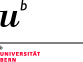

meta ?>
cssfiles ?>
Zur Breadcrumb-Navigation springen
Zur Global-Navigation springen
Zur Meta-Navigation springen
Zur Loka-Navigation springen
Zum Inhalt springen
Zum Servicebereich springen
home universität
> breadcrumb ?>
Studium
- Fakultäten Institute
- Studienwahl & Einschreibung
- Vorlesungsverzeichnis & E-Learning
- Rund ums Studium
- Austausch & Mobilität
- Universitäre Weiterbildung
| Campus
- Uni Alltag
- Beratung
- SUB StudentInnenschaft
- Gruppen & Vereine
| Bibliotheken
- Online-Recherche
- Fachbibliotheken der Universität
- Stadt- und Universitätsbibliothek
- Bibliothekskoordination
| Forschung
- Forschungsprojekte
- Forschungs-Netzwerk
- Förderung & Finanzierung
- Wissens-Transfer & Patentierung
- Wissenschaftsorganisationen
| Organisation
- Organigramm
- Leitung
- Zentrale Dienste
- Fakultäten & Institute
- Partner
- Offizielle Dokumente
| Arbeiten an der Uni
- Online Tools
- Kommunikation
- Dozierende
- Weiterbildung
- Personal
- Stellenangebote
| Öffentlichkeit
- Über die Universität
- Universität und Gesellschaft
- Dienstleistungen
- Publikationen
- Medienservice
Suchen
| metanavigation ?>
identityText ?>
localnavigation ?>
servicecontent ?>
pagetitle ?>
maincontent ?>
adressfuss ?>
